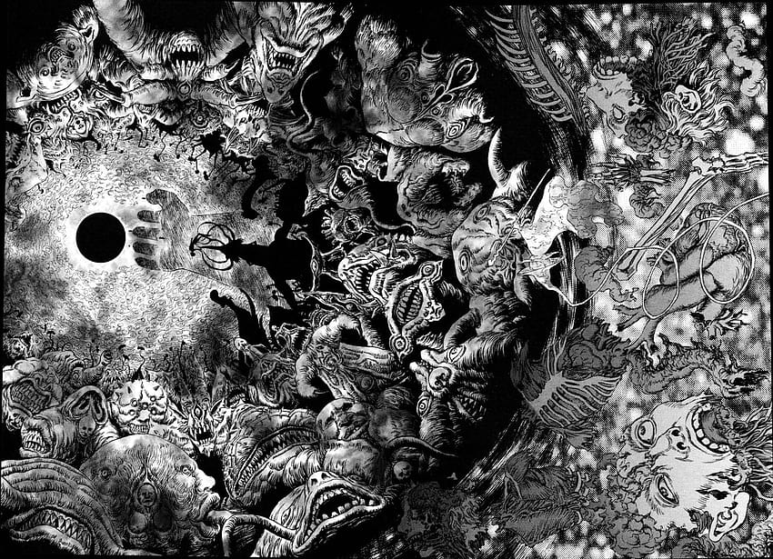
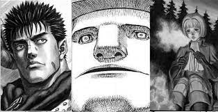
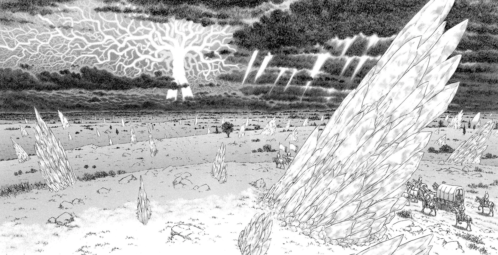

El Mundo de Berserk

"Berserk" se desenvuelve en un oscuro y crudo mundo medieval, un
reino que mezcla la fantasía sombría con elementos góticos y
grotescos. Este universo está plagado de criaturas sobrenaturales y
corrupción, donde la humanidad lucha por sobrevivir en un eterno
conflicto entre la luz y la oscuridad.
En esta realidad implacable, existen reinos corruptos y ciudades en
decadencia donde la influencia de demonios se entrelaza con la
ambición humana. Los cielos están llenos de bestias aterradoras, y
la tierra está manchada con la sangre de batallas interminables.
Arcos argumentales
La Edad Dorada

este primer arco del manga de Berserk transporta a los lectores a
la infancia de este chico, permitiéndoles experimentar en primera
persona todos los sucesos que lo llevaron a emprender este viaje
como mercenario.
Eventualmente, Guts termina formando parte de la Banda del Halcón,
la cual es liderada por Griffith. Aunque, al principio, esta fue
una decisión obligada, ya que él no quería.
Como miembro de la Banda del Halcón, Guts empieza a subir
escalones jerárquicos hasta convertirse en el Capitán del
escuadrón de asalto. Este primer arco sirve para de introducción
para que los lectores conozcan un poco más de los primeros pasos
del protagonista en este mundo. Además, los capítulos finales de
esta saga argumental muestran ese evento que cambiaría la vida de
Guts completamente.
El Espadachín Negro

Guts empieza su viaje en solitario para cazar a todos los
Apóstoles y demás criaturas malignas que se tope en su camino. Y
es precisamente en estos momentos cuando decide visitar una
taberna para conseguir información que se encuentra con Puck, un
elfo con el que interactúa.
Esta taberna es testigo de algunos sucesos que terminan con la
detención de Guts, pero que se las ingenian para escapar y cumplir
con su misión. Sin embargo, cuando decide continuar con su
siguiente objetivo, este se encuentra con la Mano de Dios, que es
una poderosa organización y que son responsables del sufrimiento
del protagonista y de la Marca del Sacrificio.
En la parte final de este arco argumental podrás atestiguar un
enfrentamiento impactante entre Guts y esta organización, a la que
se ha unido alguien a quien solía considerar su amigo.
Castigo

Guts continúa con su viaje, pero ahora se ha topado con un pequeño
pueblo en el que criaturas parecidas a elfos están atacando a las
personas y secuestrando a los niños. En este punto, el
protagonista decide investigar sobre estos acontecimientos, lo que
lo conduce directamente con la responsable, una Apóstol.
Evidentemente, Guts se enfrenta a este poderoso personaje, pero
termina gravemente herido. Y es aquí donde sus perseguidores lo
encuentran, así que debe ingeniárselas para escapar de ellos. Pero
no todos son malas noticias para el protagonista, ya que este
descubre que una amiga ha conseguido escapar, así que parte en su
búsqueda.
El Halcón Milenario

Tras una serie de sucesos, Guts termina formando parte de un nuevo
grupo. Todos parten hacia Elfhelm, que es la isla de los elfos.
Aquí ni el protagonista ni su amiga podrán ser acosados por los
espíritus malignos.
Este cuarto arco, titulado “El Halcón Milenario”, también marca un
antes y un después en la trama de Berserk, pues Guts y compañía se
topan con una maga y su aprendiz. Esta le ofrece un alivio de sus
problemas, pero el protagonista tendrá que empezar un nuevo viaje,
el cual será aún más peligroso.
Fantasía

El quinto arco de Berserk, titulado "Fantasía", es el arco actual
de la serie. Este segmento ha estado en desarrollo desde el año
2005 Hasta la actualidad
Durante este arco argumental, se desvelan detalles importantes
sobre la leyenda de este mundo y el guerrero que logró unificar
todo en un único reino de manera violenta, conocido como El
Caballero Esqueleto. Estos elementos se suman a los misterios
presentes en la trama.
Además, el antiguo amigo de Guts ha logrado que muchos gobernantes
se sometan a su autoridad y mandato, formando así una poderosa
alianza a la que todos sirven. De manera progresiva, se está
forjando una nueva leyenda en la que Guts deberá empuñar su espada
y enfrentarse a todos sus enemigos.